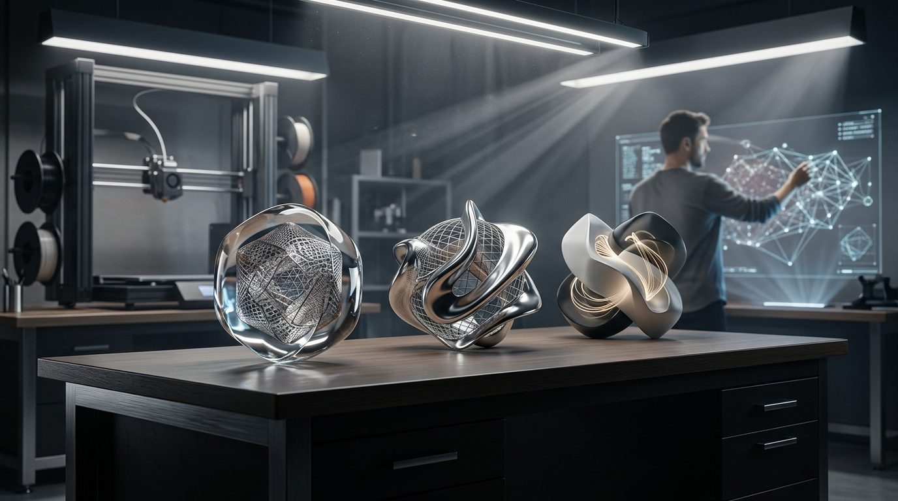
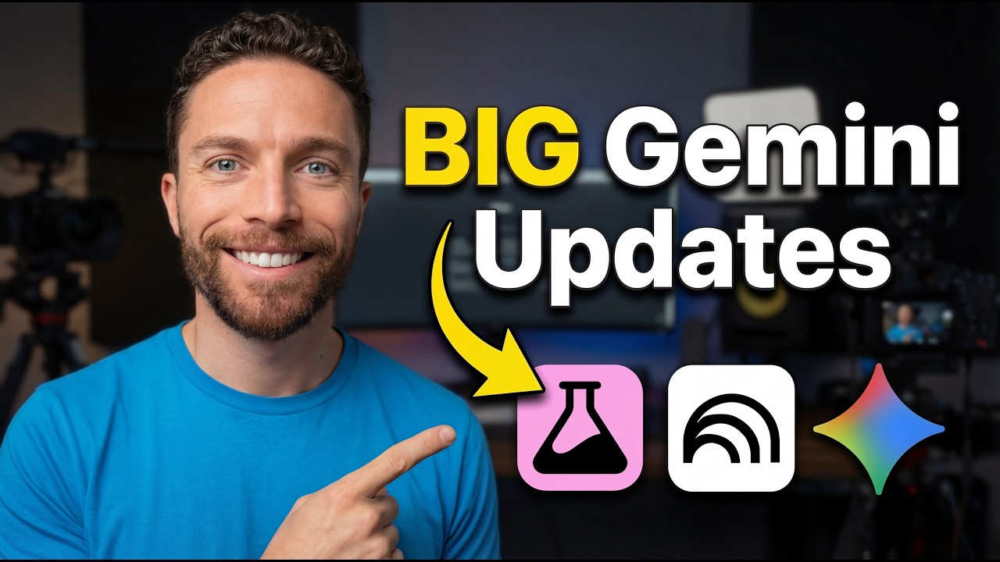

Gemini 3.1 Flash Live: Making audio AI more natural and reliable
구글은 최고 품질 오디오 모델 Gemini 3.1 Flash Live를 공개했습니다. 이 모델은 정밀도와 낮은 지연 시간을 크게 향상시켜, 실시간 음성 상호작용이 훨씬 더 자연스럽고 유창해졌습니다.
엔진 출력표보다, 자주 타는 차에 자동변속기를 달아 놓은 쪽에 더 가깝습니다.
이번 주 LLM은 성능표보다 운영표가 더 중요해진 주간이었습니다.
구글은 최고 품질 오디오 모델 Gemini 3.1 Flash Live를 공개했습니다. 이 모델은 정밀도와 낮은 지연 시간을 크게 향상시켜, 실시간 음성 상호작용이 훨씬 더 자연스럽고 유창해졌습니다.
엔진 출력표보다, 자주 타는 차에 자동변속기를 달아 놓은 쪽에 더 가깝습니다.

구글의 'Search Live' 기능이 전 세계적 확장을 마쳤습니다. AI 모드를 지원하는 모든 언어와 지역으로 확장되었습니다.
이제 200개 이상의 국가에서 구글 앱을 통해 음성 및 카메라로 검색과 상호작용하는 다중 모드 대화를 나눌 수 있습니다.
이미지 생성은 화질 과시보다 테스트를 얼마나 많이, 싸게 돌릴 수 있느냐가 더 큰 경쟁 포인트로 보였습니다.
어도비는 자사 생성형 AI 서비스 Firefly의 '생성 크레딧' 추가 요금제 상세 정보와 FAQ를 업데이트했습니다. 이번 업데이트로 사용자들은 필요한 만큼의 생성 크레딧을 유연하게 조절할 수 있게 되었습니다.
이를 통해 창의적인 작업을 더욱 자유롭게 이어갈 수 있습니다.
어도비의 AI 플랫폼 파이어플라이에 사용자가 자신의 이미지로 학습시킨 재사용 가능한 모델을 만들 수 있는 '파이어플라이 커스텀 모델' 기능이 추가되었습니다. 이제 창작자들은 자신만의 고유한 스타일이나 브랜드 자산을 반영한 AI 모델을 구축하여, 개인화된 결과물을 손쉽게 얻을 수 있는 길이 열렸습니다.
마치 나만을 위한 맞춤형 도장을 직접 새기는 것과 같습니다.
영상 생성은 거창한 신기능 발표보다 버전 전환과 기존 작업 자산을 어떻게 이어갈지가 더 크게 보인 주간이었습니다.

OpenAI는 2026년 3월 13일부로 미국 내 Sora 1 서비스를 종료했습니다. 이제 미국 사용자들은 기본적으로 Sora 2를 사용하게 되었습니다.
기존 Sora 1로 만든 콘텐츠는 영구 삭제 전까지 한정된 기간 동안만 데이터를 내보낼 수 있습니다.
PikaNetwork는 2026년 3월 20일 OpSkyBlock의 초기화 업데이트를 진행합니다. 이 초기화는 사용자들에게 새로운 시작을 제공하며, 서비스 활성화와 콘텐츠 재생산의 기회를 마련할 것입니다.
짧은 티저 한 편보다 편집실 타임라인에 새 레일을 깔아준 셈입니다.
음악 생성 쪽은 이번 주에 유독 방향이 선명했습니다. 프롬프트 한 줄 받아 곡을 뽑는 데서 끝나는 게 아니라, 내 파일과 스타일을 바로 들고 들어오게 만드는 쪽으로 확실히 꺾였습니다.

Suno가 얼리 액세스 베타 기능인 'Covers'를 새롭게 선보였습니다. 이 기능은 사용자가 간단한 음성 메모나 완성된 트랙을 가져와 원본 멜로디는 그대로 유지한 채 완전히 새로운 스타일의 곡으로 재탄생시킬 수 있도록 돕습니다. 이제 창작자들은 기존 곡의 멜로디를 기반으로 다양한 장르와 분위기를 손쉽게 시도하며, 하나의 아이디어를 무한한 형태로 확장하는 새로운 창작 흐름을 경험하게 됩니다.
마치 오래된 옷을 새로운 디자인으로 리폼하듯, 멜로디는 그대로 품고 스타일만 바꾸는 기능입니다.

Suno는 'Suno Scenes' 기능을 선보였습니다. 이 기능은 카메라로 촬영한 사진이나 영상을 기반으로 새로운 음악을 생성합니다.
멜로디 하나 얻는 수준이 아니라, 세션 파일에 자주 쓰는 악기 체인을 저장한 느낌입니다.
편집/제작 쪽은 새 버튼 하나보다 실제 반복 공정을 얼마나 덜어주느냐가 포인트입니다.
어도비는 최근 업데이트를 통해 파이어플라이의 이미지 생성, 비디오 생성, 비디오 에디터, 보드 기능은 물론, 어도비 익스프레스, 일러스트레이터, 포토샵에 협력사 모델을 도입했습니다. 이제 사용자들은 익숙한 어도비 작업 환경 안에서 다양한 협력사의 인공지능 모델을 활용하여 더욱 폭넓은 창작 도구와 스타일을 경험하게 될 것입니다.
마치 만능 작업 도구함에 각 분야 전문 도구가 추가된 것과 같습니다.
3D 쪽은 멋진 결과물보다 후속 수정과 파이프라인 연결이 더 중요해진 흐름입니다.
Tripo AI P1.0은 입력 정렬, 기하 정확도, 텍스처 품질 개선에 집중했습니다. 이는 캐릭터나 메카닉 같은 복잡한 자산의 시각적 일관성을 높이기 위함입니다.
멋진 렌더 한 장보다, 모델링 책상 위에 손이 덜 가는 공구를 올린 셈입니다.

밤부 랩은 자사 MakerLab의 AI 이미지-3D 변환 서비스에 Meshy 6를 새로 추가했으며, 이제 Hunyuan 3.1, Meshy 6, Tripo AI 3.0 세 가지 모델 중 선택할 수 있게 되었습니다. 사용자들은 2D 이미지를 3D 모델로 변환할 때 여러 AI 모델을 시도하며 더욱 만족스러운 결과물을 얻을 수 있게 되면서, 창작의 자유도와 결과물의 품질이 한층 높아지는 흐름입니다.
마치 화가가 여러 붓을 번갈아 쓰며 원하는 질감을 표현하듯, 다양한 AI 모델은 사용자에게 최적의 3D 형태를 찾아낼 가능성을 열어줍니다.
에이전트/자동화는 데모보다 실제로 어디까지 맡길 수 있느냐가 핵심입니다.
4sysops 쪽에서 이번 주 흐름을 보여주는 공식 업데이트가 나왔습니다. 에이전트 영역은 데모보다 실제 워크플로에 몇 단계까지 맡길 수 있느냐가 승부처입니다.
똑똑한 비서 한 명보다, 자주 하던 심부름에 전용 동선을 깔아 놓은 느낌입니다.
u/steadeepanda는 이번 주 AI 에이전트 워크플로우에 외부 보안 및 안전 계층을 제공하는 Agent Ruler v0.1.9를 출시했습니다. 특히 사용자 인터페이스가 현대적이고 직관적인 모습으로 전면 개편되었습니다.
똑똑한 비서 한 명보다, 자주 하던 심부름에 전용 동선을 깔아 놓은 느낌입니다.
이번 주 이슈랑 같이 보면 맥락 잡기 좋은 영상 3개만 골랐습니다. 뉴스형 브리핑 위주로 넣었습니다.


이번 주 웹진에서 다룬 Claude, Gemini 흐름을 같이 훑기 좋은 영상입니다.

이번 주 웹진에서 다룬 Gemini 흐름을 같이 훑기 좋은 영상입니다.